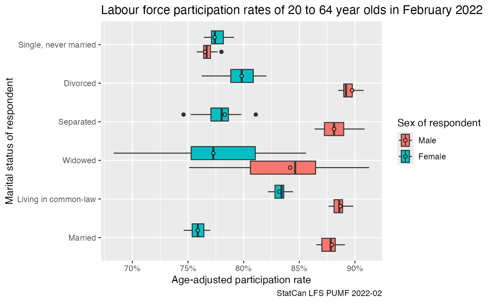

library(dplyr)
#>
#> Attaching package: 'dplyr'
#> The following objects are masked from 'package:stats':
#>
#> filter, lag
#> The following objects are masked from 'package:base':
#>
#> intersect, setdiff, setequal, union
library(tidyr)
library(ggplot2)
library(canpumf)The LFS is one of the most-used PUMF series, since January 2021 the LFS PUMF is now easily available for direct download instead of needing to request it via EFT. This makes it very easy to integrate the LFS into reproducible workflows.
The canpumf package has two functions to facilitate
access to the LFS PUMF. The first lists all LFS pumf versions that are
available for direct download.
list_available_lfs_pumf_versions()
#> # A tibble: 21 × 3
#> Date version url
#> <chr> <chr> <chr>
#> 1 September 2022 2022-09 https://www150.statcan.gc.ca/n1/pub/71m0001x/2021001/…
#> 2 August 2022 2022-08 https://www150.statcan.gc.ca/n1/pub/71m0001x/2021001/…
#> 3 July 2022 2022-07 https://www150.statcan.gc.ca/n1/pub/71m0001x/2021001/…
#> 4 June 2022 2022-06 https://www150.statcan.gc.ca/n1/pub/71m0001x/2021001/…
#> 5 May 2022 2022-05 https://www150.statcan.gc.ca/n1/pub/71m0001x/2021001/…
#> 6 April 2022 2022-04 https://www150.statcan.gc.ca/n1/pub/71m0001x/2021001/…
#> 7 March 2022 2022-03 https://www150.statcan.gc.ca/n1/pub/71m0001x/2021001/…
#> 8 February 2022 2022-02 https://www150.statcan.gc.ca/n1/pub/71m0001x/2021001/…
#> 9 January 2022 2022-01 https://www150.statcan.gc.ca/n1/pub/71m0001x/2021001/…
#> 10 December 2021 2021-12 https://www150.statcan.gc.ca/n1/pub/71m0001x/2021001/…
#> # … with 11 more rowsThe second one facilitates the download. For example, to download the LFS pumf for February 2022 we use
lfs_2022_02_path <- download_lfs_pumf("2022-02", destination_dir=file.path(tempdir(),"pumf","LFS"))
#> Downloading PUMF data.By default the data is stored in the temporary session path,
optionally we can set the destination_dir option to a path
to permanently cache the data.
With this we can do some simple descriptive analysis. We add boostrap weights to better understand the uncertainty in the estimates, for more serious analysis we should probably go with a higher number of bootstrap weights.
lfs_2022_02_data <- lfs_2022_02_path %>%
read_pumf_data() %>%
label_pumf_data() %>%
add_bootstrap_weights("Standard final weight",100,seed=42)
#> New names:
#> • `` -> `...15`
#> • `` -> `...16`For this vignette we look at gender-specific labour fource status statistics for the 20 to 64 year old population, computing age-adjusted rates to even out age-specific effects.
data <- lfs_2022_02_data %>%
filter(substr(`Five-year age group of respondent`,0,2) %in% seq(20,60,5)) %>%
filter(`Labour force status`!="Not in labour force") %>%
group_by(`Labour force status`,`Five-year age group of respondent`,`Sex of respondent`,
`Marital status of respondent`) %>%
summarise(across(matches("Standard final weight|WT\\d+"),sum),.groups="drop") %>%
pivot_longer(matches("Standard final weight|WT\\d+"),names_to="Weight",values_to="Count") %>%
group_by(`Five-year age group of respondent`,`Sex of respondent`,
`Marital status of respondent`, Weight) %>%
mutate(Share=ifelse(Count==0,0,Count/sum(Count))) %>%
ungroup()
data_age_adjusted <- data %>%
left_join((.) %>%
group_by(`Five-year age group of respondent`,`Sex of respondent`,Weight) %>%
summarize(Count=sum(Count),.groups="drop") %>%
group_by(`Sex of respondent`,Weight) %>%
mutate(P_age__sex=Count/sum(Count)) %>%
ungroup() %>%
select(`Sex of respondent`,`Five-year age group of respondent`,Weight,P_age__sex),
by=c("Sex of respondent","Five-year age group of respondent","Weight")) %>%
group_by(`Sex of respondent`,`Labour force status`,`Marital status of respondent`, Weight) %>%
summarise(age_adjusted=sum(Share*P_age__sex),.groups="drop")
data_age_adjusted %>%
filter(`Labour force status`=="Unemployed") %>%
ggplot(aes(x=age_adjusted, y=`Marital status of respondent`, fill=`Sex of respondent`)) +
geom_boxplot() +
geom_point(shape=21,data=~filter(.,Weight=="Standard final weight"),position=position_dodge(width=0.75)) +
scale_x_continuous(labels=scales::percent) +
labs(title="Unemployment rates of 20 to 64 year olds in February 2022",
x="Age-adjusted unemployment rate",
caption="StatCan LFS PUMF 2022-02")
data2 <- lfs_2022_02_data %>%
filter(substr(`Five-year age group of respondent`,0,2) %in% seq(20,60,5)) %>%
group_by(`Labour force status`,`Five-year age group of respondent`,`Sex of respondent`,
`Marital status of respondent`) %>%
summarise(across(matches("Standard final weight|WT\\d+"),sum),.groups="drop") %>%
pivot_longer(matches("Standard final weight|WT\\d+"),names_to="Weight",values_to="Count") %>%
group_by(`Five-year age group of respondent`,`Sex of respondent`,
`Marital status of respondent`, Weight) %>%
mutate(Share=ifelse(Count==0,0,Count/sum(Count))) %>%
ungroup()
data_age_adjusted2 <- data2 %>%
left_join((.) %>%
group_by(`Five-year age group of respondent`,`Sex of respondent`,Weight) %>%
summarize(Count=sum(Count),.groups="drop") %>%
group_by(`Sex of respondent`,Weight) %>%
mutate(P_age__sex=Count/sum(Count)) %>%
ungroup() %>%
select(`Sex of respondent`,`Five-year age group of respondent`,Weight,P_age__sex),
by=c("Sex of respondent","Five-year age group of respondent","Weight")) %>%
group_by(`Sex of respondent`,`Labour force status`,`Marital status of respondent`, Weight) %>%
summarise(age_adjusted=sum(Share*P_age__sex),.groups="drop")
data_age_adjusted2 %>%
filter(`Labour force status`=="Not in labour force") %>%
ggplot(aes(x=1-age_adjusted, y=`Marital status of respondent`, fill=`Sex of respondent`)) +
geom_boxplot() +
geom_point(shape=21,data=~filter(.,Weight=="Standard final weight"),position=position_dodge(width=0.75)) +
scale_x_continuous(labels=scales::percent) +
labs(title="Labour force participation rates of 20 to 64 year olds in February 2022",
x="Age-adjusted participation rate",
caption="StatCan LFS PUMF 2022-02")
data_age_adjusted2 %>%
filter(`Labour force status`=="Employed, at work") %>%
ggplot(aes(x=age_adjusted, y=`Marital status of respondent`, fill=`Sex of respondent`)) +
geom_boxplot() +
geom_point(shape=21,data=~filter(.,Weight=="Standard final weight"),position=position_dodge(width=0.75)) +
scale_x_continuous(labels=scales::percent) +
labs(title="Share of 20 to 64 year olds working in February 2022",
x="Age-adjusted share at work",
caption="StatCan LFS PUMF 2022-02")